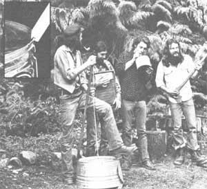

Even homesteaders need to relax and enjoy themselves from time to time, right? And almost everybody these days wants to cut his or her cost of living. So how about a little doit-yourself entertainment?
And that's what this column is all about. Down-home music that you can make ... and the instruments (which, in some cases, you can also make!) to play that music on.
We may also publish some songs, discuss music as a potential home business, run discographies, bibliographies, and/or include whatever other do-it-yourself music topics you'd like to see.
The important thing is that this is a test column. If you like it, write to me and let me know. If you have some ideas for this feature, let me know that. I'm open to any suggestions or information you care to contribute. I'll even try to answer your questions about down-home music ... but-both for the benefit of all MOTHER's readers and to ease my correspondence load?I'll deal with those questions, whenever possible, here in this column ... rather than in personal letters.
Address your correspondence?for this column and this column only-to Marc Bristol, 31722 N.E. 180th Place, Duvall, Wash. 98019.
One way to save money and have a good time all at once is by making your own music-and your own musical instruments?at home. Here are a few ideas for doing just that without spending a lot of cash ... or even going down to the local music store!
Any homemade music-whether hammered out on the piano, guitar, banjo, fiddle, or whatever?becomes more interesting and more fun for everyone involved as more and more instruments are added to the festivities. Especially if those instruments contribute some tonal and rhythmic coloring of their own. And one of the most basic of all the additions you can make to any "pickin' and grinnin' " group is the down-home washtub bass, or "gutbucket". Although the instrument's strong suit is solid rhythmic accompaniment, it can produce true notes (much to the amazement of electric bass players!) and has a range of about an octave and a half.
Start this construction project by scrounging up a No. 1 or No. 2 washtub or similar large metal container. Don't settle for one with its bottom rusted out because, for this purpose, that bottom has to be strong. Buy a new tub if you have to (and it won't break you, since a new No. 1 washtub costs only about $15).
The neck for your gutbucket should be approximately 4-1/2 feet long and can be anything from a whittled-down hardwood sapling to an old rake handle or even a piece of steel conduit that is attached to the tub with a strap hinge. Closet hanger dowel (1-1/4")?or an old oar--works real well. The stronger the neck of your instrument, the better . . . since lighter ones tend to absorb string vibration and dampen a gutbucket's sound.
For that string (you only need one) I'd recommend starting with plastic-coated, steel-core, nylon clothesline. It's both the least expensive and the best, according to Quentin Rhoton (the bass player in the accompanying picture). "It's easy on your fingers," Quentin says, "that's why it's the best. 'Course, you can use piano wire or a gut D-string from a bass fiddle if you want to. Try anything you can find that looks like it might work. Remember, though, that resiliency is important: Your string has to stretch for the higher notes and then spring back again. "
The string is attached to the center of the upside-down washtub, usually by either one of two methods: [1] drill a hole a little larger than the gutbucket's string in the bottom of the tub, thread the string through the opening, and knot the line on the other side to hold it in place, or [2] bolt a small hasp or eyebolt to the center of the tub's bottom and tie your string to it.
In either case, it's advisable to reinforce the inside of the container's bottom with something like a peanut butter jar lid, a circle of sheet metal, or a circle of 1/4" plywood. You can cement the reinforcing disc in place or just let the knotted string or eyebolt hold it there like a big washer. It's also a good idea- if you use the knotted string idea-to pass the line through a couple of fiber washers first, then the reinforcing disc ... and to tape the string where it passes through the tub's metal bottom (all to protect the line from localized wear).
If you use a wooden pole for your gutbucket's neck, notch its bottom end so it can be hooked on the little rim that runs around the bottom of a washtub. Then bevel off the side of the notch that faces the tub's bottom, so it won't touch the metal (and dampen the tone) as the neck is leaned back and forth during a song.
A hole a little larger than your string is then drilled through the gutbucket's neck perpendicular to the notch on the lower end and about five inches down from the top (to leave you a nice handle to hold onto). If you don't feel that you need that much handle, cut your stick three or four inches shorter.
OK. Pass the string through the hole you've just drilled and adjust it so that it just pulls taut when the line is standing straight up and the stick is leaning over the tub. Then wind that dude around the neck and tie it above the hole and you're ready to play!
Hold the upturned washtub down by planting your foot (left foot for southpaws, right for the rest of us) on its opposite side. And make sure that foot rests only on the tub's little rim ... otherwise you'll deaden the gutbucket's sound.
Some players like to rest that far side of the tub on something like a piece of 2 X 4 to let the sound out. Others prefer to drill a 3/8" hole in the container's side. Most all remove the washtub's handles so they won't rattle in the middle of a hot song.
During your actual strummin', just pull back or let off on the gutbucket's stick with one hand (to change the instrument's tone) while you pluck that single string with the other. And when you're ready to wail, make sure your group tackles a song in which you get to play a solo!
This one is a natural for all you tabletop drummers. Any of the metal boards will do, but a brass one has the best tone in my opinion (forget glass boards for this use).
If you can't find a good metal washboard around the ole homestead or up in your grandmother's attic, figure on picking one up in a junk shop for $5. When I decided to start playing this instrument I spread the word ... and within months three good boards came at me all at once from three different directions. If everything else fails, you can still get yourself a nice new brass washboard from any one of several mail-order stores that now handle oldtimey items of this nature ... such as Morse Hardware Company, 1025 State St., Bellingham, Wash. 98225.
Then just latch onto some metal thimbles (they come in several sizes), one for each finger, and start to "tap dance" on that ole scrubboard. You may even want to buy a couple of metal guitar thumb picks (or fashion your own from a sheet of light metal) so your thumbs can dance too. I've also seen gloves with thimbles sewed right onto every finger and thumb (the thimbles can be a little looser when you do it this way) which enables anyone who plays more than one instrument to dazzle the audience with a display of quick change artistry.
And if you want to dance and scrub out some rhythm at the same time, just add a dandy neck strap to your board. Cowbells, pans, tops, cymbals, wood blocks, bicycle horns, or what have you can also be attached to a washboard to give it greater versatility. The more different sounds you have to experiment with, the more interesting and fun the instrument is to play. I've even run across one board which sported an old enameled urinal ... so visit the dump with your thimbles on one of these days and conduct some "tune tests" on all that lovely junk out there.
And don't feel (as some players do) that fast ragtime stuff like "Coney Island Washboard" is the only music this instrument should be turned loose on. Scrubboards are great for bluegrass and I love to limber mine up on old rhythm and blues tunes too. Try your board on anything.
You don't have to do anything to a jug to turn it into a musical instrument except at least partly empty it. Old ceramic molasses jugs (which, on occasion, have been known to become filled with other beverages ... such as corn liquor) are, of course, the most traditional for this use. Any kind of jug-from a half- to five-gallon capacity-will do the job though.
A jug is properly played something like a horn. That is, you do not use your lips and mouth to produce an ordinary "pop bottle whistle" noise. Instead, press your lips tightly together and blow air through them to make sort of a "motor boat" sound. The tone is then directed into the container which resonates and amplifies it in somewhat the same way a guitar body resonates and amplifies the sound of that instrument's strings. Different tones can be produced by both tightening and loosening the lips ... and by blowing harder or softer. Experiment, too, with tipping your jug up and down to change the angle at which you direct your sound into it.
A good jug has a bass range that, to some degree, overlaps the range of the washtub. Its sound is kind of a cross between the pipe organ, the gutbucket, and the slide trombone. The effect is both musical and humorous ... so get some folks together, pass the jug around, everybody practice his or her best tones, and see if you don't wind up with a hilarious evening for all hands.
It doesn't take anything but a comb and some waxed paper to make your traditional downhome kazoo. Simply wrap the paper around the comb, press it to your lips, and hum a tune. You can cup your hands (the way a harmonica player does) around the instrument for a "wahwah" effect. Other papers and techniques work too. Experiment.
If you want to get a little fancier, commercially made kazoos are available from both music and toy stores (they're usually less expensive at the toy shops). A few kazoos played in harmony make a great reed and brass section for any group of do-it-yourself musicians. And a marching kazoo band can liven up a dead church social, organization picnic, or other gathering when all else fails.
Basically any handsaw will do ... but some are definitely better than others and if you hunt around you're likely to turn up a few that have been manufactured especially for this purpose. In general the more pliable the saw you can find, the better the music you'll be able to make.
You play this instrument by holding its handle against your knee and bending its blade into an S-curve with one hand while striking or bowing it with the other. Any convenient rubbertipped striker is used in the first method, and a violin bow is the obvious choice in the second. A saw's tone is altered by using both wrist and knee pressure to change the tension on the larger (lower) curve. The resulting sound is similar to some of the modern synthesized music that is so popular these days. I've also heard the musical saw described as the "original pedal steel".
We couldn't close this first column without mentioning the spoons (yep, the ordinary kind you find in every kitchen drawer). Hold two of 'em back-to-back loosely in one hand with your index finger between the handles ... and let their bowls rattle together as you beat the spoons against your knee or between your other hand and the knee.
Interesting effects can also be obtained by playing a set of spoons in front of your open mouth as you change the size of the mouth cavity (sort of the way you do when you play the jaw harp). In another sense, the spoons are a lot like castanets ... and I have a friend who sometimes switches off to a set of, handcarved wooden spoons, in addition to playing all sorts of metal ones. Each set has a sound all its own.
Quentin says a tub bass can be put together in as little as 15 minutes and I know it doesn't take even that long to get started playing one. The other instruments described here don't require any construction at all. Remember, too, that there are still further possibilities: Anything that will produce a sound becomes a musical instrument when it's played rhythmically.
So what are you waiting for? A whole summer's worth of bluegrass hoedowns, old-time fiddlers' conventions, plain ordinary picnics, long evenings after the chores are all done, and other get-togethers will be here before you know it.
You don't have to be a professional to get in on this kind of music. The fun part is just the gettin' together (emphasis on the "together") with other musicians and "jamming". Give everybody a chance to come up with a song for the group to try ... and the older and the more familiar some of those tunes are, the better. Even Oh Suzanna or I've Been Working on the Railroad can be a real thrill again when you play 'em on your own homegrown instruments.
|
 Marc Bristol and other Washington State grassroots musicians wail away on a gutbucket, washboard, jug, and axe. Axe? ""Actually, "" says Marc, ""the axe, in this instance, is just a gag ... although I think it'd make a pretty good percussion instrument!"" Inset photo shows detail of lower end of gutbucket stick. Note notch and bevel. |
|
|